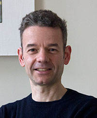

Alun uses sound, projection and sculpture to explore the overlap between a general mood evoked by soundscapes, and specific personal memories. He increasingly works with a sculptural combination of technology and the natural world to explore the way that touch affects our memory. In Mesosporangiate Strobili (2009) an installation of a miniature forest of pine cones emit a whisper of sound, recorded during a three weeks residency in the arboretum at Nuneham Courtenay. Transporter Mix (2009) was a participatory installation/performance that invited the audience to step barefoot into three micro-environments: beach, park and woodland. Recorded sounds from these environments were then overlaid and mixed by the artist according to the visitor's location within the piece, allowing them to be both 'inside' and 'outside', to travel and to stand still. After listening, the visitor was invited to talk about their memories. The film RUN (2007) combined the sound of the artist's footsteps running on a variety of surfaces with footage shot at ground level to explore movement and memory of place. The footage was inverted, and this 'upside down' view of the world reflected the runner's focus on the ground rather than the more usual view of distant horizons.